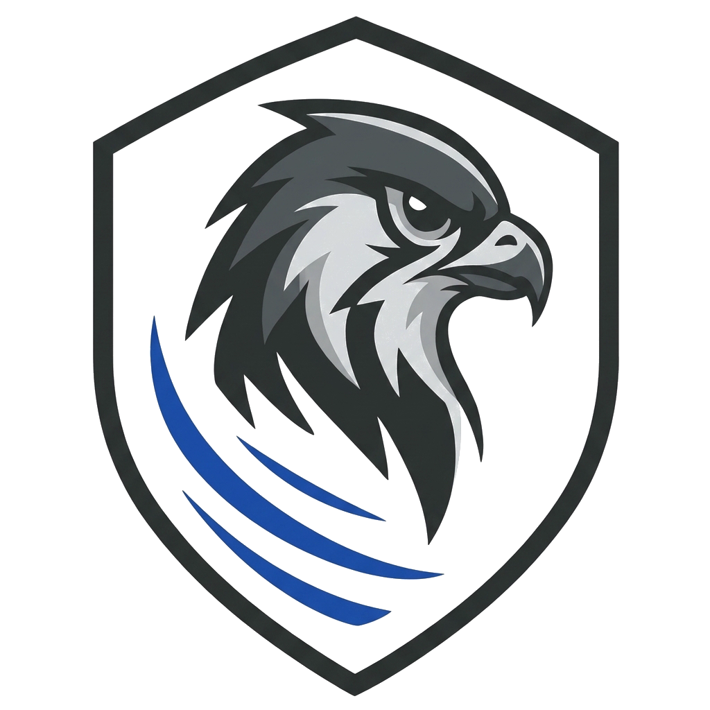
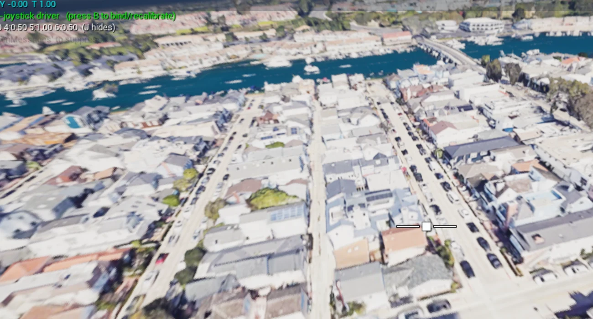

Choose the Operating Area
Enter coordinates and create a location-based scenario.
- Streamed 3D terrain where service coverage and connectivity allow.
- A generated training environment provides a fallback when streamed terrain is unavailable.

Early Design-Partner Program
KESTREL is a Windows-based sUAS mission-rehearsal simulator for public-safety, search-and-rescue, inspection, and training teams. Configure the aircraft you fly, load an operating area, and practice a structured run with repeatable objectives and scoring.
Practice navigation gates, position holds, reconnaissance or inspection dwells, and precision landing using an RC transmitter. Selected component specifications inform simulator parameters, while core mission data and session records remain local.
Configure → Rehearse → Compare → Improve.
Bring one aircraft, one location, and one training problem. Design partners receive guided onboarding, early-build access, and direct input into scenario development.
Mission workflow
KESTREL connects an operating area, an aircraft configuration, an objective chain, and a session result in one practice loop. Design partners help us measure and improve that loop against the missions their teams actually perform.
Enter coordinates and create a location-based scenario.
Mass, motor, propeller, battery, and radio parameters come from the selected build.
Introduce conditions an operator may need to recognize and manage.
A familiar control loop for repeatable practice.
Carry the selected configuration and mission into rehearsal.
Objectives, scoring, and a completion record.

COTS Architect handoff
Assemble a configuration from your organization's inventory in COTS Architect, define the operating area and objective chain, then export a versioned handoff package to KESTREL.
The handoff keeps the aircraft configuration, mission metadata, operating area, and objectives together. Core file exchange and session records stay local; streamed terrain requires connectivity when that source is selected.
Explore COTS Architect →How it runs
The core simulator, mission execution, and session record run on a supported Windows PC. Streamed terrain may require an active connection and is subject to provider coverage.
Use a compatible RC transmitter in USB mode. Map the sticks and arm control, then save the profile for repeatable sessions.
Use streamed 3D terrain where coverage permits, or run the mission loop in a generated training environment.
Build a measurable sequence from gates, position holds, inspection dwells, return, landing, and disarm conditions.
Each completed run produces a local session summary with objective outcomes, elapsed time, and score for comparison.
Design-partner pilots
Tell us what aircraft your team flies, the mission you want to rehearse, and one evaluation location. We will scope a controlled pilot with clear success criteria.
Discuss a KESTREL Pilot